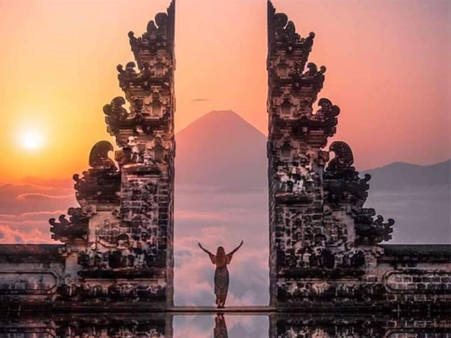
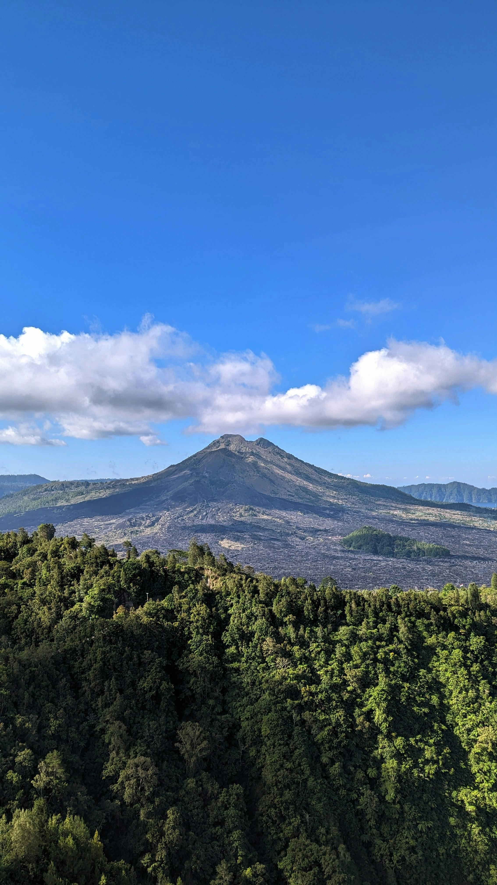

Private Bali Experiences
Featured Bali Tours
Explore our most popular private Bali experiences with local drivers and flexible itineraries.

Ubud Cultural Tour
Monkey Forest, Tegallalang Rice Terrace, Tirta Empul Temple, and local village experience.
- ✓ Private Car
- ✓ English Speaking Driver
- ✓ Flexible Itinerary
From IDR 650K / Car
View Detail

East Bali Tour
Visit Lempuyang Temple, Tirta Gangga, Taman Ujung, and beautiful coastal viewpoints.
- ✓ Gate of Heaven
- ✓ Scenic Photo Spots
- ✓ Full Day Trip
From IDR 750K / Car
View Detail

Kintamani Volcano Tour
Enjoy Mount Batur view, lake scenery, coffee plantation, and peaceful highland atmosphere.
- ✓ Volcano View
- ✓ Coffee Plantation
- ✓ Private Trip
From IDR 700K / Car
View Detail